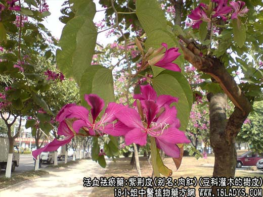
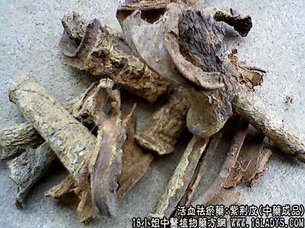

【中药概述】
紫荆皮，别名：肉红、内消、紫荆木皮、白林皮，为豆科灌木植物紫荆皮的树皮。苦，平。归心、肝、脾、膀胱经。
1．活血止痛，解毒消肿：用于痈疽疖疮，鹤膝风等症，可配伍活血消肿药同用。
2．利水通淋：用于利尿，及淋症。
【药物形态】
树皮呈筒状或槽状或不规则的块片，向内卷曲，长约6～25cm，宽约3cm，厚约3～6mm，外表灰棕色，粗糙，有皱纹，常显鳞甲状；内表面紫棕色，或红棕色，有细纵纹理。质坚实，不易折断，断面灰红棕色。对光照视，可见细小的亮点。气无，味涩。
【临证应用】紫荆皮75g，独活，白芷45g，赤芍30g，石菖蒲22g，研末葱酒调敷患处。主痈疽发背，阴阳不和，冷热瘀凝者。
【用量用法】6——10g，水煎服，或入剂。